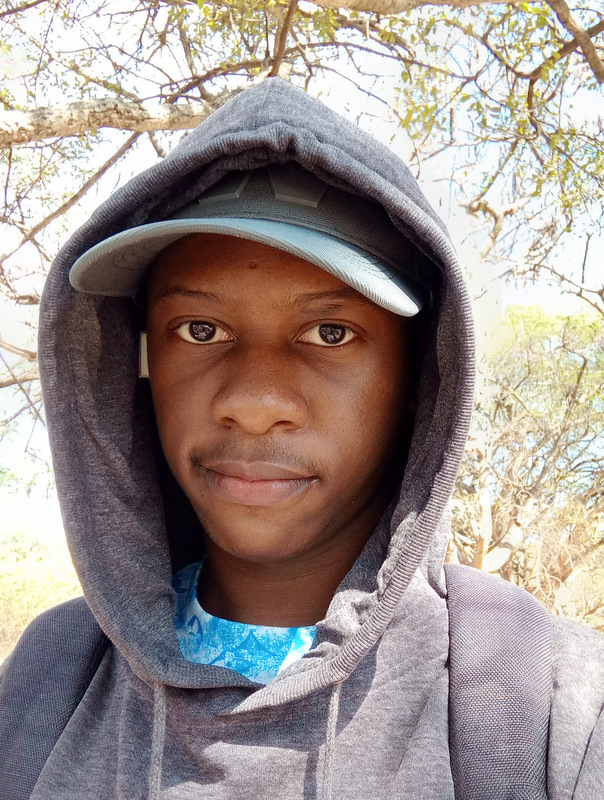

- 22
- Kamwala, Lusaka, Zambia.
- Student
- Libala 2022 Outgoing Alumni
- Tech Enthusiast
About Me
I am a third-year Computer Science student at The Copperbelt University. I have a passion for programming and technology, and I am always eager to learn new things in the field. I enjoy exploring different programming languages and frameworks, and I am particularly interested in web development and software engineering. In my free time, I like to watch anime, listen to music, and I am also an avid gamer, which allows me to unwind and connect with friends who share similar interests. My interest in gaming fuels my curiosity about game development and the technology behind it, how simple 0s and 1s are the backbone of the technologies that bring about such complex and fascinating visuals and sounds. I am excited to continue my studies and pursue a career in the tech industry, where I can apply my skills and contribute to innovative projects.
Hobbies
- Programming
- Watching Anime
- Watching Podcasts/Debates about Religion
- Gaming
- Listening to Music
Top Performing Courses
- Programming
- Mathematics
- Physics